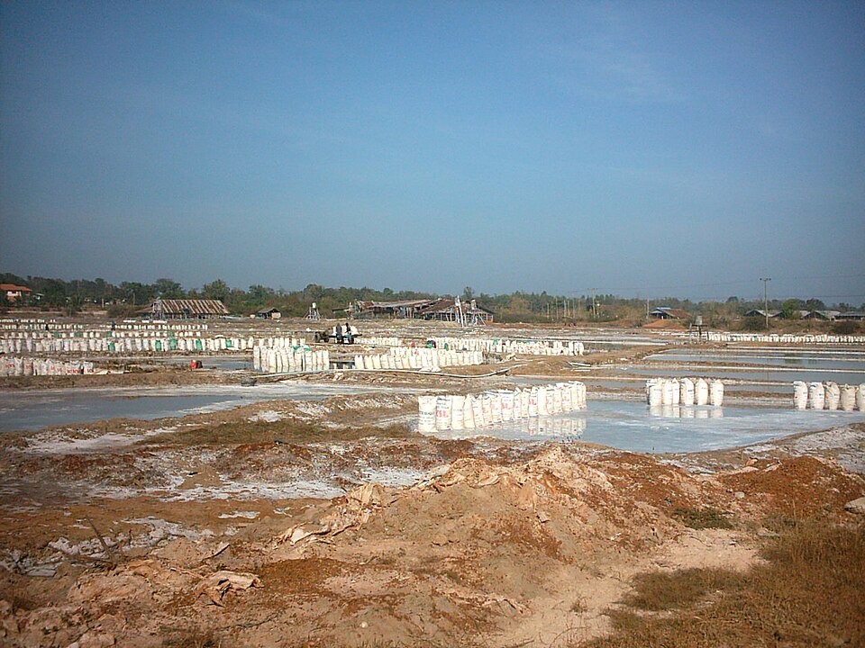

Choose your locationChoisissez votre lieu
 The Grand Palace and Wat Phra KaewLe Grand Palais et le Wat Phra KaewThe royal palace founded in 1782 and the Temple of the Emerald Buddha.Le palais royal fondé en 1782 et le temple du Bouddha d’Émeraude.
The Grand Palace and Wat Phra KaewLe Grand Palais et le Wat Phra KaewThe royal palace founded in 1782 and the Temple of the Emerald Buddha.Le palais royal fondé en 1782 et le temple du Bouddha d’Émeraude. Wat PhoWat PhoThe Reclining Buddha, four great chedis and a library in stone.Le Bouddha couché, quatre grands chedis et une bibliothèque de pierre.
Wat PhoWat PhoThe Reclining Buddha, four great chedis and a library in stone.Le Bouddha couché, quatre grands chedis et une bibliothèque de pierre. Ban ChiangBan ChiangA prehistoric village, its painted pottery and early bronze, on the World Heritage List.Un village préhistorique, ses poteries peintes et ses premiers bronzes, inscrit au patrimoine mondial.
Ban ChiangBan ChiangA prehistoric village, its painted pottery and early bronze, on the World Heritage List.Un village préhistorique, ses poteries peintes et ses premiers bronzes, inscrit au patrimoine mondial. Kham ChanotKham ChanotA sacred forest island of chanot palms, at the heart of the naga legend.Une île-forêt sacrée de palmiers chanot, au cœur de la légende des nagas.
Kham ChanotKham ChanotA sacred forest island of chanot palms, at the heart of the naga legend.Une île-forêt sacrée de palmiers chanot, au cœur de la légende des nagas.
Ban Dung Salt FieldsLes salines de Ban DungInland salt drawn from an ancient underground salt bed, by sun and by fire.Du sel des terres tiré d’un ancien gisement souterrain, par le soleil et par le feu.
- ReadLireEvery stop is written to be read on its own.Chaque étape se lit seule, sans audio.
- ListenÉcouterOptional audio, about a minute per stop.Audio facultatif, environ une minute par étape.
- OfflineHors ligneDownload a location before you travel.Téléchargez un lieu avant le voyage.